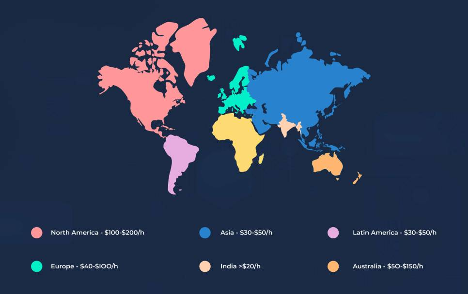
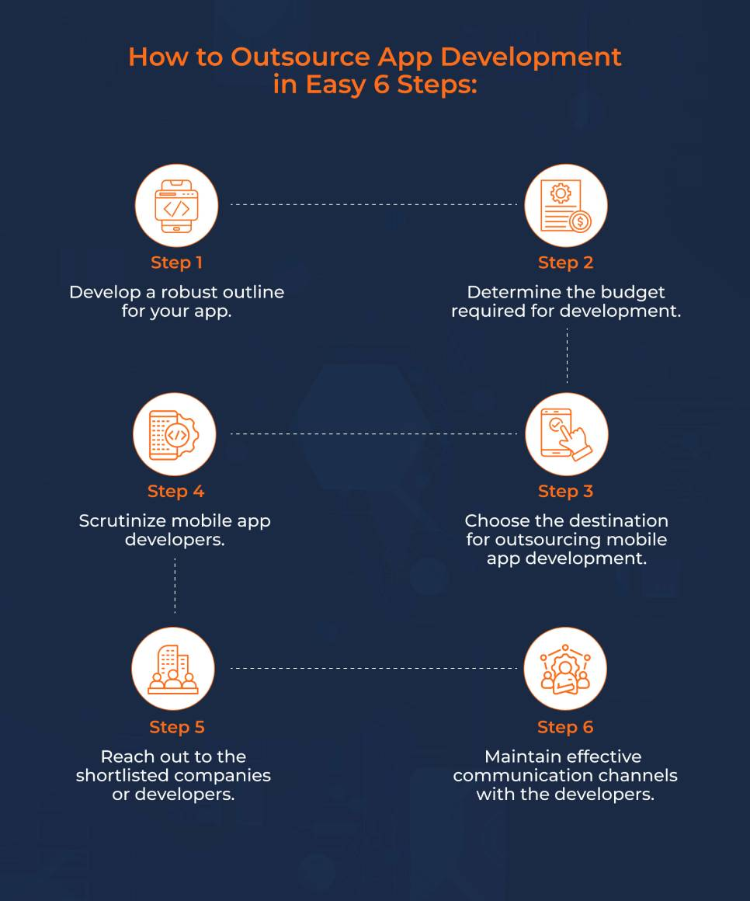
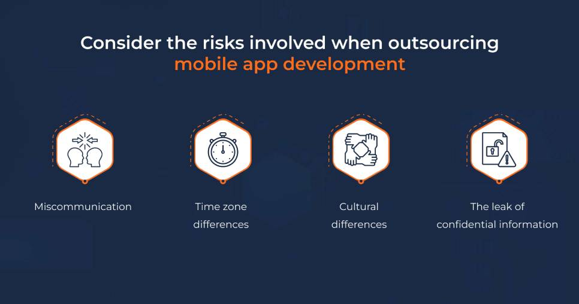
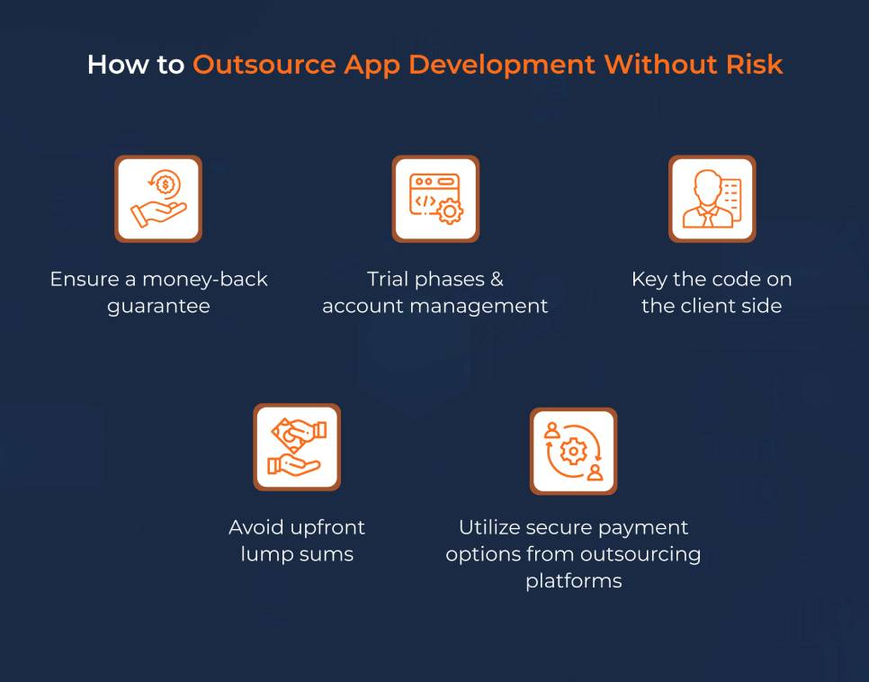

Introduction:
We are among the 96% of individuals who start their morning with an app upon waking, making us prime candidates for the ever-expanding app development industry. Are there specific types of apps available in the market that are customized for your business? If not already done, now is the opportune moment to outsource mobile app development for your business to soar to new heights.
In today's modern world, building your mobile app development team is not always necessary. Many businesses, regardless of their size, prefer to outsource mobile app development to avoid hiring issues and ensure a smooth development process.
However, how can you make the right choice and avoid costly mistakes when outsourcing app developers? If you're interested in further exploring successful mobile application outsourcing, we've put together a guide that explains how to effectively outsource app development by following best practices. Let's see
Your business can become a roaring success with the right development partner by your side.
Crucial Benefits of Outsourcing Mobile App Development
Should you hire an in-house development team or outsource your mobile app development to a third-party company? In this article, we will explore the option of outsourcing mobile app development and provide tips on how to avoid common pitfalls in the process.
Outsourcing mobile app development offers a range of benefits that you shouldn't overlook. By outsourcing app development, you can hire skilled developers at a lower cost, avoiding investment in costly software development stacks and saving on overhead expenses.
Cost-effectiveness:
- According to a report by Deloitte, around 70% of businesses opt for outsourcing as a way to cut costs.
- Outsourcing app development can save you costs compared to other hiring models.
- This can help you save on overhead expenses and avoid investing in costly software development stacks.
| Experience | The US | The UK | Ukraine |
|---|---|---|---|
| Junior iOS developer | $80,000 | $75,000 | $90,000 |
| Associate iOS developer | $10,000 | $76,000 | $56,000 |
| Senior iOS developer | $31,000 | $22,000 | $87,000 |
Access to top talents
- Outsourcing mobile application development provides access to skilled programmers worldwide.
- 80% of companies improve product quality through outsourcing.
Faster Time to Market
- A report by PwC published on BusinessWire has revealed that 70% of companies that outsource their software development achieve faster time-to-market.
- This approach provides a dedicated development team proficient in the required technology for swift time-to-market. Their expertise enables rapid coding, efficient library implementation, and seamless technology adoption.
Focus on core competencies
- Outsourcing app development minimizes internal distractions and helps focus on core competencies.
- Outsourcing software development enables businesses to prioritize essential activities like sales, customer service, and marketing.
Enhanced flexibility
- Companies can outsource app development to access a larger talent pool, onboard quickly, and downsize without navigating recruitment laws or hiring bureaucracies.
It's time to take advantage of the benefits of outsourcing app development by exploring the available options.
Have the desire and idea to build an app but don't know where to start?
Our software development team will capture your project in the best possible way and deliver the best workflow.
App Development Outsourcing Models
Here are the available options for outsourcing app development:
- Offshore outsourcing
- Nearshore outsourcing
- Onshore outsourcing
Let's explore what they involve, and weigh their pros and cons so you can make informed decisions:
Offshore Outsourcing
This option involves outsourcing software development to a distant country with a lower cost of living.
Let's weigh the advantages and disadvantages of this choice.
| Pros | Cons |
|---|---|
|
|
When considering outsourcing application development, it's important to factor in nearshoring. Let's take a closer look.
Nearshore Outsourcing
This outsourcing model involves hiring a team of software developers from a nearby country to work on a project. For instance, an Australian company could outsource to an agency in India. To determine whether this approach is advantageous, we will analyze its advantages and disadvantages.
| Pros | Cons |
|---|---|
|
|
Onshore Outsourcing
This particular outsourcing model is called onshore outsourcing, which involves hiring a software development team within the same country where your startup is located. For instance, a US-based startup outsources to a US-based software development agency. In this context, we will discuss the advantages and disadvantages of onshore outsourcing.
| Pros | Cons |
|---|---|
|
|
Among all outsourcing destinations, India stands out due to its combination of low prices and high levels of technical expertise. You can discern the primary contrast in development hourly rates between India and other locations through this map.

How to Outsource App Development in Easy 6 Steps:
Do you have an exciting application idea and looking to move forward with it? If you have decided to outsource mobile app development instead of having an in-house team, we have come up with six steps to help you get started. These steps will guide you through the process of setting the ball rolling.

Step 1: Develop a robust outline for your app
It is important to have a clear vision of your product before outsourcing app development. A good outsourcing company can help you with market research and business analysis, but having a clear idea of what you want will make it easier to find a service provider and establish clear expectations. When working with individual app developers, this clarity becomes even more valuable, as miscommunication can lead to an app that is completely different from what you wanted.
Prepare clear and precise answers to these questions.
- What are the objectives you seek to fulfill with your app?
- What specific issue does the app aim to address for its users?
- Are you interested in developing an iOS app, an Android app, or both platforms?
- Have you considered creating a hybrid app?
- What functionalities are essential for your app?
- What strategies do you have in mind to monetize your app?
Step 2: Determine the budget required for development
When selecting a mobile app development company, consider both price and quality. Choose an option with a cost estimate lower than your budget. Avoid deals that seem suspiciously cheap and work with low-rate freelance developers. Find trustworthy partners instead. The price difference between freelance developers and outsourced mobile app development is often not significant. Compile a list of trustworthy outsourcing firms or freelance developers that fit your budget constraints. Request estimates from each and carefully evaluate their offerings to select the most suitable option for your requirements.
Step 3: Choose the destination for outsourcing mobile app development
When searching for an app development company, consider their experience with your platform and the required technologies. Choose from onshore, nearshore, or offshore providers and decide early on for effective communication.
Subsequently, collaborating with contractors in different time zones can be challenging. Onshore companies are easier to work with, but they may charge high prices. Outsourcing to nearshore or offshore companies can be more budget-friendly. It's important to find a skilled mobile app outsourcing company that follows remote project management practices to work across time zones seamlessly.
How to find outsourced developers
When outsourcing mobile app development, individuals typically search through Google. However, there are now dedicated websites for freelance developers and potential clients.
Upwork offers a vast selection of professionals but lacks proper verification and matching mechanisms. TopTal is reliable but pricier. For UI/UX designers, Dribbble and Behance are popular.
When searching for an outsourcing company, Clutch is the best place to start. With over 12,000 companies listed, it offers excellent sorting features, ratings, reviews, and project information. GoodFirms is also a reliable platform.
For narrowing down options, search engines and Quora can be helpful. The Clutch is the most comprehensive option.
Step 4: Scrutinize mobile app developers
To narrow down your list of outsourcing providers, review their portfolios or certifications to check their relevant experience in app development. After confirming their experience, download the app to ensure it works properly.
When hiring an app developer, research is key. Look for developer reviews on sites like Clutch, feature reviews that can provide insight into the strengths and weaknesses of a particular company to narrow down your list of potential service providers.
Step 5: Reach out to the shortlisted companies or developers
To save time, create a list of up to five company/developer options. Ask about their unfeatured projects, references, and team education/communication. Ask any unanswered questions to make an informed decision. Haven't found answers online. This will help you make an informed decision based on all the available data.
Step 6: Maintain effective communication channels with the developers
Communicate clearly with developers during the app development process. A project manager will keep you informed if you outsource development. If you work with a freelancer, agree on communication methods and frequency.
As the product owner, it is also important to establish a formal relationship with the app developer. When working with a company, you should have a written agreement outlining the terms of your engagement. However, some freelance developers may be hesitant to enter into a formal agreement, which should be a warning sign for you to be cautious.
Consider the risks involved when outsourcing mobile app development:
When outsourcing mobile app development to offshore companies, misconceptions about the quality of service providers are common. Many tech businesses have had negative experiences with outsourcing, and we understand how difficult it can be to find the right team. Let us assist you in avoiding the most common pitfalls of IT outsourcing.

Miscommunication
Collaboration with offshore teams is usually done remotely. When considering outsourcing app development to another country, familiarize yourself with remote project management practices. Remote communication is becoming easier with the help of project planning and communication tools such as Slack, Zoom, and Skype.
Time zone differences
Offshore destinations are located far from the client's country, making it difficult to communicate due to time zone differences. This can lead to challenges in controlling the quality of work and handling urgent issues. Nearshoring app development can be a better option, where outsourcing is done to a nearby country or region, for example, Latin America for the United States or Eastern Europe for the United Kingdom.
Cultural differences
Teams, whether in-house or offshore, often come from diverse cultural backgrounds, leading to varying work approaches and potential communication barriers. For instance, Asian developers may conceal mistakes or issues due to fear of repercussions. Hence, the company must establish a clear culture code that all team members adhere to. Additionally, it's essential to treat offshore team members with the same respect and standards as in-house team members.
The leak of confidential information
When a company decides to outsource its app development project, it needs to share its sensitive data and sometimes even its customers' sensitive data with the outsourced app development agency. In the same manner, to reduce the risks involved in such sharing, the client company should take appropriate legal and organizational measures, such as having offshore developers sign a Non-Disclosure Agreement (NDA).
How to Outsource App Development Without Risk:
When outsourcing app development, take measures to reduce risk. Firstly, engage a high-quality software development partner. Secondly, anticipate guarantees and set up leverage for early action. Additional measures include:

Ensure a money-back guarantee
If the quality of work is unsatisfactory, ensure a relevant clause in the contract allows for non-payment.
Trial phases & account management
Consider a short trial period with a test assignment instead of a large upfront payment when hiring an outsourced IT company. If you lack experience in software projects or outsourcing, hire a client-side project manager. Establish clear communication guidelines and discuss the need for additional meetings when hiring team members.
Key the code on the client side
It is important to set up your client-side repository to take control of the code right away. This step helps prevent the outsourced app development agency from not giving you the code in case of a disagreement.
Avoid upfront lump sums
To make contract management easier, please request a detailed cost breakdown of the scope of work. It's recommended to avoid paying large lump sums in the early stages of the project. It's important to work with a vendor for at least six months before being confident in their ability to deliver.
Utilize secure payment options from outsourcing platforms
One of the significant advantages of using a hiring platform like Sparkout, Upwork, or TopTal is that they provide secure payment services. This means that you can release the payment only when you are satisfied with the quality of the work.
Future Trends of Outsourcing Mobile App Development
As days pass, the outsourcing landscape for mobile app development is evolving fast as new tech, global talent, and automation reshape how companies build products. These upcoming trends show how app outsourcing will become faster and more strategic in the upcoming years.
More AI-Powered Development Support
Companies start outsourcing to teams that use AI for faster coding, smarter testing and better automation. This helps in reducing the delivery time and enhancing the application’s stability.
Growth of Remote-First Global Talent
Instead of sticking to one region, top brands will hire specialists from different countries. This gives access to rare skill sets and more flexible price ranges.
Focus on Security & Compliance
The outsourced teams will be expected to follow robust data protection rules. Businesses and enterprises will prefer partners who can actually handle privacy laws and secure cloud setups.
Rise of Cross-Platform & Multi-Device Builds
The majority of the outsourced projects will focus on building one codebase that works on multiple platforms, including mobile phones, tablets, PCs, web, and even smart TVs.
Demand for Full-Cycle Product Teams
Clients will work for outsourcing partners who actually offer design, development, QA, deployment, and long-term support in a single place. This improves coordination and reduces project risks.
Wrapping Up
Moreover in the current digital age mobile applications have become an integral part of our lives, providing solutions for almost every need. This has led to an increase in demand for app developers, but unfortunately, there is a shortage of tech talent to meet this demand. Last of all, outsourcing mobile app development to offshore agencies has become a popular trend. This practice brings numerous benefits, including:
- Cost Reduction
- Time savings
- High-quality work
At the same time, it also poses risks such as:
- Miscommunication
- Time zone differences
- Cultural differences
- The leak of confidential information
Lastly, to reduce your risk while outsourcing software development, you must implement some simple measures. It is imperative to ensure that all milestones are met and the quality of work delivered is reliable before establishing a win-win collaboration with your preferred software development company. At Sparkout, we offer a seamless outsourcing experience, promoting a real win-win collaboration. Our service is available to help you achieve your goals with utmost reliability and quality assurance.
Technical Architect
At Sparkout Tech Solutions, we believe in the power of collaboration. I take pride in fostering a team culture that encourages open communication, knowledge sharing, and continuous learning. In the ever-evolving tech landscape, I am committed to staying at the forefront of industry trends. This commitment allows us to deliver solutions that not only meet but exceed our clients' expectations